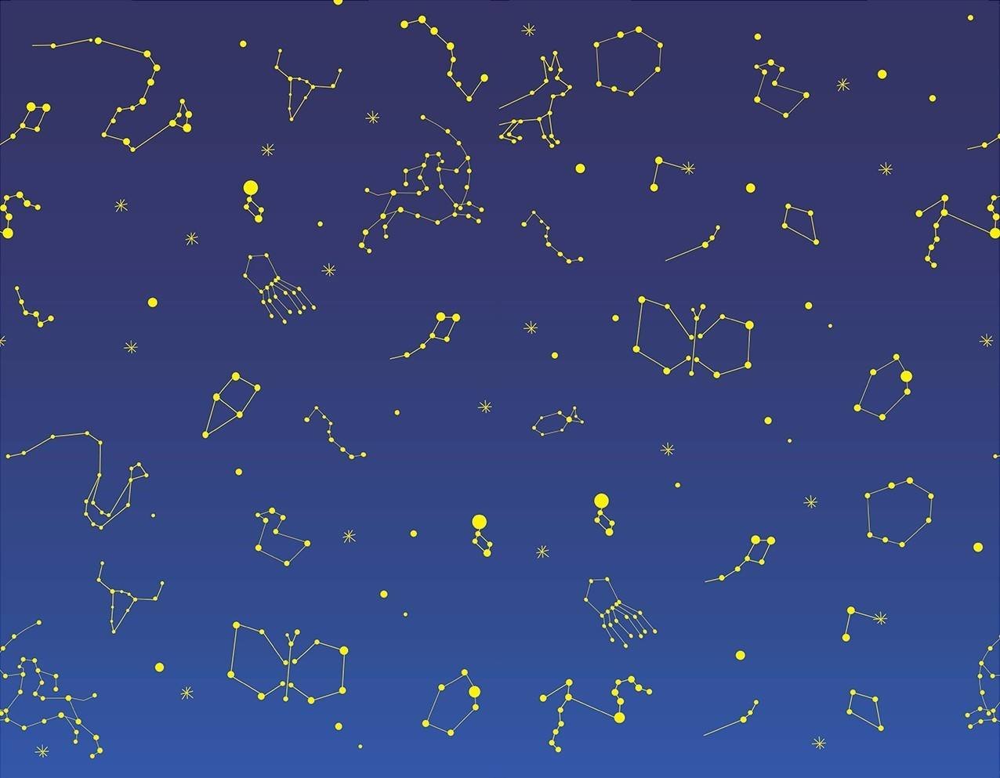

左右脑测试
1．当你唱歌的时候：
喜欢读歌词
会把旋律、节奏和歌词都背下来
2．当碰到困难的时候：
认真思考，然后制定出逐步的解决计划
依靠自己的感觉解决问题
3.当有约会或者活动的时候：
会早点到，以防万一
经常是准时到，或者稍微晚一点
4.当读书的时候：
愿意去体会每句话中的细微差别
会浏览一下，找一些比较有趣的内容
5.当烹饪炒菜的时候：
经常是照着菜谱做
会利用手边的材料，发挥自己的想像力
6．当有人问路的时候：
会告诉他具体的街道名称，以及大致的距离
会给他描述一下沿途中的显着标识
7.看电影时，记忆最深的是：
情节
演技
8. 我最佩服别人的 ：
判断力
同情心
9. 当我照镜子的时候，假设在脸部中央画一条竖线，我看到耳朵、眼睛和眉毛：
左边的高
右边的高
10. 当我开抽屉的时候：
用左手
用右手
11. 当我和朋友聊天的时候：
我的声音很平淡
我的声音富有感情